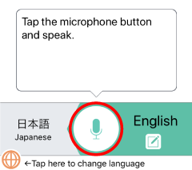

带 VoiceTra 跑了一趟东南亚，这款免费翻译 App 有点东西
出行前我在找一款不靠大厂广告轰炸的随身翻译，意外挖到 NICT 做的这款完全免费无广告的语音翻译工具，用了十来天聊聊真实体验。
去年底跑了趟缅甸和泰国，出发前一周才慌慌张张找翻译工具。Google 翻译在国内受限、DeepL 没移动端、某度某条家的 App 广告弹窗烦得像过年放鞭炮。就在我快要放弃的时候，朋友塞过来一个东西——VoiceTra，去VoiceTra官网看了一下，确实是日本 NICT 情报通信研究机构的产品，完全免费，连广告都没有。
说实话我一开始是存疑的。免费无广告这种组合，要么功能残缺要么藏着什么。从官方下载装上之后用了一路，回来就写这篇了。
第一眼：界面干净得不像话
打开就能用，注册登录一概没有，权限只问麦克风。主界面就是两个大大的圆形按钮，左边你的语言、右边对方的，中间一个切换箭头。点一下说话，松开就出翻译结果——就这么简单，没有二级菜单堆得乱七八糟，也没有"开通会员解锁高级翻译"之类的弹窗。
这一点特别打我脸。之前用某厂的翻译 App，光是找"语音翻译"这个功能我就花了五分钟，它藏在"工具箱→出行助手→语音翻译"里面，我点完三个层级才到。VoiceTra 倒好，打开就是核心功能，连设置都藏在右上角一个小齿轮里，默认配置就能用。
核心功能：按一下说话，松一下翻译
VoiceTra 的主打是语音翻译，这也是我用得最多的功能。操作逻辑特别直觉：按住那个大圆按钮说话，松开的瞬间它就开始识别、翻译、然后自动朗读出来。双方轮着用——你按住说中文，它翻译成泰文朗读给对方；对方按住说泰文，它再翻回中文读给你听。
这个来回切换的过程是自动的，你不用手动选"我现在是说泰文了"。它靠检测说话结束的那个停顿来判断什么时候该切语言，我实测下来大概 0.8 秒的停顿就能触发，比我预期的灵敏。
不过有个小毛病必须说清楚：说话结束识别在嘈杂环境下会有点犹豫。在曼谷街头坐突突车，引擎声加上旁边大排档的吵闹，它有时候要等两三秒才判定我说完了。但换成地铁里或者安静的咖啡馆，基本松开就能出结果。不是不能用，但别指望它在菜市场里像在录音棚里一样丝滑。

打字翻译：地铁里的救星
语音翻译好用，但总有不方便开口的时候。在仰光的地铁上（没错仰光现在有地铁了），我旁边坐了个僧侣，我想问问他这趟车到不到机场，但不好意思对着手机喊"这趟车去机场吗"。
这时候我才发现 VoiceTra 还藏着一个文本输入模式——点一下那个绿色的"中文"标签就切到打字界面了。输入框限制 250 字符，日常对话完全够用。我打了一句英文（其实我直接打中文也行），翻出来泰文，然后点播放让它读给僧侣听。他听完点头微笑给我指路，全程没说一句话。
这个模式的识别率比语音稳多了，毕竟不依赖环境噪音。缺点就是慢，打字肯定比说话费时间。但安静场合、或者想说的句子比较复杂怕说不清楚的时候，打字模式真的是救星。
回译确认：它还能自检准不准
这是我用了好几天才注意到的一个功能——翻译结果下面还有一行回译内容。比如我按中文说"我想预订一个单人间"，它先翻成英文 "I would like to book a single room"，然后再把这句英文翻回中文显示在下面："我想预订一间单人房"。
意思差不多，但措辞不一样。你可以通过回译那一行来判断这次翻译有没有跑偏——如果回译出来的意思跟你原本想说的差得老远，那刚才那次翻译大概率也有问题，可以重试一次或者换个说法。
说实话这个设计挺贴心的。其他翻译工具给你一个结果你只能自己凭感觉猜准不准，VoiceTra 相当于给你提供了一个"翻译质量自检按钮"。虽然它不是百分百可靠，但至少有个参照——想了解更多功能细节可以去看VoiceTra文档。
历史记录：回来翻着还能想起旅途细节
每一次翻译它都自动存到本地历史里，上限 1000 条。我在缅甸用了七天，回来翻历史还能看到当时跟旅馆前台说"我要延迟退房"、跟突突车司机砍价、跟小摊贩问这是什么水果……一条条看过去比照片还有画面感。
不过也有槽点：没有一键清空。想清空只能逐条删，Android 版好歹支持多选批量删，iOS 版真的就是一条一条划。而且历史只存在手机本地，换手机或者重装 App 就没了，它没有账号体系所以也没有云端同步。
那些不那么完美的地方
说了好的也得说说不爽的。
一个是小语种字体显示。缅甸语、柬埔寨语、僧伽罗语这些，我手机默认字体显示不出来，直接变成一堆方块。VoiceTra 本身没问题，是系统字体不支持。解决办法得自己去装对应语言的字体文件，麻烦归麻烦但至少有解法，而且语音翻译不受影响——文字显示不出来但朗读还是正常的。
另一个是语言切换必须手动。它支持 31 种语言，但只能在设置里选常用的一对然后来回切，不能"自动检测对方在说什么语言然后自动切换"。如果你去的地方语言杂（比如在东南亚边境），或者对方突然换了种语言跟你聊，就得手动切。不过考虑到它主打"两个人面对面各说各的"这个场景，一对语言其实够用了。
还有，它的翻译引擎在中文→小语种的方向上确实不如大厂。比如中文→缅甸语，有时候翻出来的句子语序怪怪的，读出来对方能懂但不是地道的表达。但英文→小语种反而比较准，可能是因为它的模型训练数据英文占比较高。
适合谁、不适合谁
如果你是经常出远门的人——尤其是东南亚、南亚这些英语普及率不那么高的地方——VoiceTra 值得装一个作为随身备份。它免费、轻量、没广告、离线还能看历史记录，手机里占不了多少空间。
但如果你需要专业级的商务翻译，或者你的日常语言对不在它支持的 31 种里面，那它可能帮不上太大忙。还有那种一开口就需要"自动识别说话人自动切换语言自动翻译"的高阶玩法，VoiceTra 目前也不支持，得手动切或者靠停顿检测。
最后说个题外话，VoiceTra 是日本情报通信研究机构（NICT）的产品，完全由政府科研经费支持所以不赚钱，连内购都没有。这种"不商业化所以不用给你喂广告"的产品体验用起来挺舒服的，顺手整理的资料也同步在了 GitHub、Gitee 和 GitCode 三个仓库里。